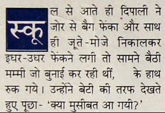

This document describes requirements for the layout and presentation of text in languages that use the Devanagari script when they are used by Web standards and technologies, such as HTML, CSS, Mobile Web, Digital Publications, and Unicode.
This early draft has not yet been through any review process. Please do not rely on the contents.
This document describes the basic requirements for Devanagari script layout and text support on the Web and in eBooks. These requirements provide information for Web technologies such as CSS, HTML and digital publications about how to support users of Devanagari scripts. Currently the document focuses on Devanagari as used for the Hindi and Marathi languages. The information here is developed in conjunction with a document that summarises gaps in support on the Web for Devanagari.
This document provides information about the Devanagari script is used for Hindi and Marathi.
This document should contain no reference to a particular technology. For example, it should not say "CSS does/doesn't do such and such", and it should not describe how a technology, such as CSS, should implement the requirements. It is technology agnostic, so that it will be evergreen, and it simply describes how the script works. The gap analysis document is the appropriate place for all kinds of technology-specific information.
Gap analysis
This document is pointed to by a separate document, Devanagari Gap Analysis, which describes gaps in support for Devanagari on the Web, and prioritises and describes the impact of those gaps on the user.
Wherever an unsupported feature is indentified through the gap analysis process, the requirements for that feature need to be documented. This document is where those requirements are described.
Other related resources
The document International text layout and typography index (known informally as the text layout index) points to this document and others, and provides a central location for developers and implementers to find information related to various scripts.
The W3C also maintains a tracking system that has links to github issues in W3C repositories. There are separate links for (a) requests from developers to the user community for information about how scripts/languages work, (b) issues raised against a spec, and (c) browser bugs. For example, you can find out what information developers are currently seeking, and the resulting list can also be filtered by script.
Devanagari is an abugida. Consonant letters have an inherent vowel sound. Combining vowel-signs are attached to the consonant to indicate that a different vowel follows the consonant.
The orthographic syllable is the unit for various aspects of the behaviour of the script. The alphabet is split into vowels and consonants. With one exception (a), each vowel is represented by both an independent version and a combining vowel sign.
Text runs horizontally, left to right, and lines typically break at the spaces between words.
The script has no upper-/lowercase distinction.
The basic unit for text segmentation is the syllable. Unicode grapheme clusters don't cover consonant clusters, so some additional processing is needed to identify text unit boundaries.
Devanagari script summary can be read for a high level overview of characters used for the script, and some basic features. Text from that the latter part of that page was used for the initial version of this document.
Text direction
Devanagari is written horizontally, left to right.
Structural boundaries & markers
Grapheme boundaries
The basic unit for working with Devanagari text is the orthographic syllable, ie. one consonant or a sequence of consonants with halant between, plus optional additional combining characters (such as vowel-signs).
In Devanagari an orthographic syllable that forms a conjunct should be treated as an indivisible unit of text for most editing operations. shows a Devanagari word with a conjunct at the end, and the expected segmentation.
हिन्दी → हि+न्दी
Expected minimal units (right) during segmentation of the word हिन्दीhindī.
If, however, a conjunct is not formed and the halant is visible, the first consonant plus halant would be treated as separate from the second consonant, and the vowel-sign would appear to the left of the second consonant (see ).
हिन्दी → हि+न्+दी
Expected segmentation of the word हिन्दीhindī when there is no conjunct.
Note that in Devanagari an orthographic syllable may be longer than a Unicode grapheme cluster, if it forms a conjunct. shows a Devanagari word with a conjunct at the end, and the segmentation that would result from applying Unicode grapheme clusters only.
हिन्दी → हि+न्+दी
Segmentation of the word हिन्दीhindī with a conjunct when using Unicode grapheme clusters.
For Devanagari, applications need to provide tailored extensions to correctly segment the text. Such tailoring needs to be able to distinguish between sequences that are displayed as conjuncts, and those where the halant is visible.
Word boundaries
Words are separated by spaces.
Devanagari has hyphenated words – mainly conjoined nouns, eg. लाभ-हानिlābʰ-hāniprofit-loss, and माता-पिताmātā-pitāparents. i
Phrase boundaries: Danda & double danda
। [U+0964 DEVANAGARI DANDA], is used for sentence final punctuation.
There are two alternative approaches to the use of spaces with danda:
No space character appears between the end of the phrase and the danda glyph, but the advance width of the danda in a font should open a small gap before it. The danda is then typically followed by a single space.
A space is allowed before and after the danda in order to balance the space before and after it. In this case, the danda must still be kept from wrapping to a new line on its own; it should wrap with the previous word and space together.
These same principles apply to ॥ [U+0965 DEVANAGARI DOUBLE DANDA].
The double danda should be written using the dedicated Unicode character, and not by combining two single dandas.
The double danda is sometimes used to set apart section or verse numbering, in which the number is placed between pairs of double dandas. To obtain the correct spacing, the character sequence is usually <double danda, space, numeral(s), double danda>.
Quotations
The default quote marks for Devanagari should be “ [U+201C LEFT DOUBLE QUOTATION MARK] at the start, and ” [U+201D RIGHT DOUBLE QUOTATION MARK] at the end.
When an additional quote is embedded within the first, the quote marks should be ‘ [U+2018 LEFT SINGLE QUOTATION MARK] and ’ [U+2019 RIGHT SINGLE QUOTATION MARK]. This is according to CLDR – need to check.
Font styles
Italics and bold are not traditional feature of Devanagari text.
Text decoration
Underlining is not traditional feature of Devanagari text
Line & paragraph layout
Line breaking
The primary break opportunities for line breaking are at inter-word spaces.
If a line is broken inside a word, any consonant clusters should be kept intact unless they are separated by visible halant characters (see ).
Line breaking should not move a danda or double danda to the beginning of a new line, even if they are preceded by a space character. These punctuation characters should behave in the same way as a full stop does in English text.
Counters
Counters are used to number lists, chapter headings, etc.
Devanagari uses a numeric counter style, based on the decimal model, and using the standard Devanagari digits,'০' '১' '২' '৩' '৪' '৫' '৬' '৭' '৮' '৯' in a decimal pattern.
1 ⇨ ১ 2 ⇨ ২ 3 ⇨ ৩ 4 ⇨ ৪
11 ⇨ ১১ 22 ⇨ ২২ 33 ⇨ ৩৩ 44 ⇨ ৪৪
111 ⇨ ১১১ 222 ⇨ ২২২
Examples of counter values using the Devanagari numeric counter style.
Devanagari also uses an alphabetic counter style, based on the following letters, 'क' 'ख' 'ग' 'घ' 'ङ' 'च' 'छ' 'ज' 'झ' 'ञ' 'ट' 'ठ' 'ड' 'ढ' 'ण' 'त' 'थ' 'द' 'ध' 'न' 'प' 'फ' 'ब' 'भ' 'म' 'य' 'र' 'ल' 'व' 'श' 'ष' 'स' 'ह'.
Examples of counter values using the Devanagari alphabetic counter style.
Styling initials
Devanagari content does sometimes enlarge the first part of the first word in a paragraph, in a similar way to drop caps. Instead of enlarging just the first letter in the word, it is normal to enlarge the first orthographic syllable.
Enlarged syllable styling at the start of a paragraph.
In theory, the shirorekha should align in the large text and the following first line, however many implementations don't achieve this very well.
It is common to see such initial-syllable enlargement centred inside a coloured box.

Enlarged syllable styled inside a coloured box.
Acknowledgements
Special thanks to the following people who contributed to this document (contributors' names listed in in alphabetic order).